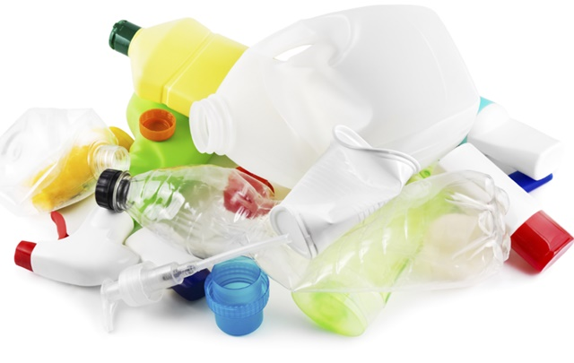

Descarte correto de residuos
Descarte e reciclagem do Plastico
Reciclagem do Plastico
Reciclar plástico é uma maneira eficaz de reduzir a poluição e preservar os recursos naturais. Ao reciclar garrafas, embalagens e outros produtos plásticos, podemos evitar que toneladas de resíduos plásticos acabem em aterros sanitários ou no oceano, onde representam uma ameaça para a vida marinha e o meio ambiente. Além disso, a reciclagem de plástico reduz a necessidade de produção de plástico virgem, economizando energia e recursos não renováveis.
A importância da reciclagem do Plastico
- Protege a vida marinha, reduzindo o risco de ingestão e emaranhamento de animais em resíduos plásticos.
- Fomenta a inovação e o desenvolvimento de novos materiais e processos de reciclagem, impulsionando a economia circular.
- Ajuda a combater a poluição visual em áreas urbanas e naturais.
- Economiza recursos não renováveis, como petróleo.
- Contribui para a redução da emissão de gases de efeito estufa.
Como descartar Plastico corretamente
O plástico deve ser separado dos outros materiais e também limpo antes do descarte. Verifique se há instruções específicas de reciclagem no recipiente plástico. Alguns tipos de plástico podem não ser recicláveis ou requererem métodos de reciclagem diferentes. Comumente, recipientes plásticos, como garrafas de refrigerante e frascos de shampoo, podem ser reciclados. Certifique-se de esvaziá-los e enxaguá-los antes de descartá-los. Se houver pontos de reciclagem específicos para diferentes tipos de plástico em sua área, é recomendável separá-los de acordo com essas diretrizes.